Softwares
Rapid On-Site Estimation of Response Spectrum (ROSERS)
Github Link
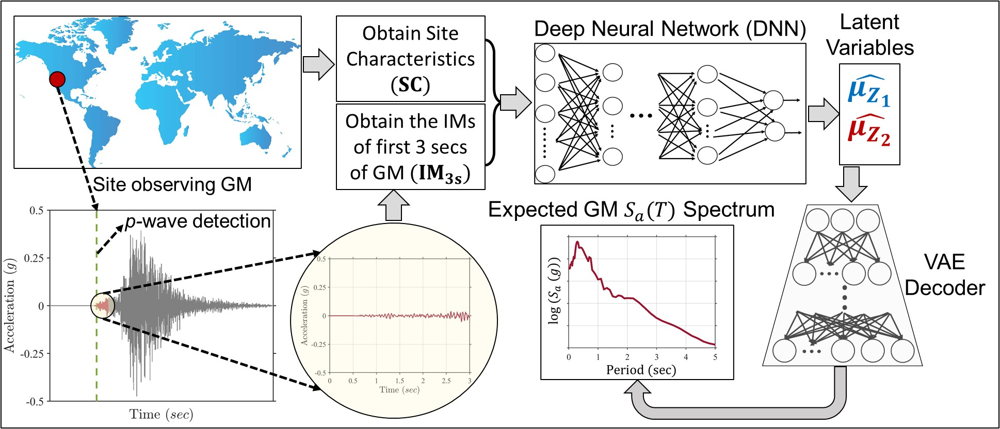
Generalized Ground Motion Model for Mainshock-Aftershock (GGMM MSAS)
Github Link
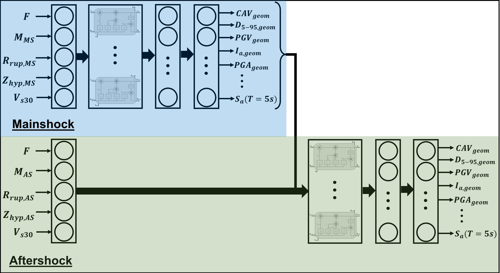
Generalized Ground Motion Model (GGMM) for Chilean Subduction
Github Link
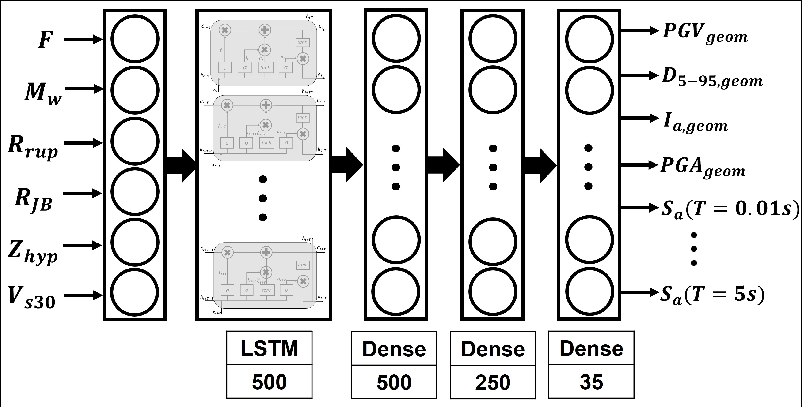
Generalized Ground Motion Prediction Model (GGMPM)
Github Link
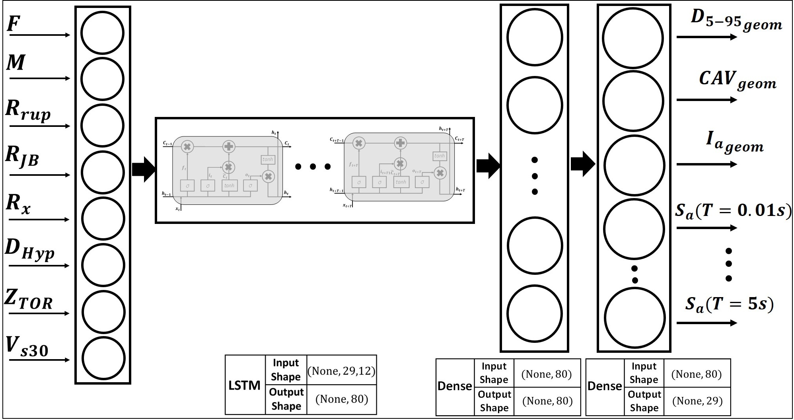
Hazard-Targetted Time-Series Simulator (HATSim)
Github Link
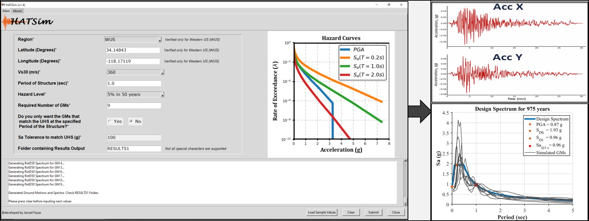
Spectrally-Targetted Time-Series Simulator (SpecTSim)
Github Link
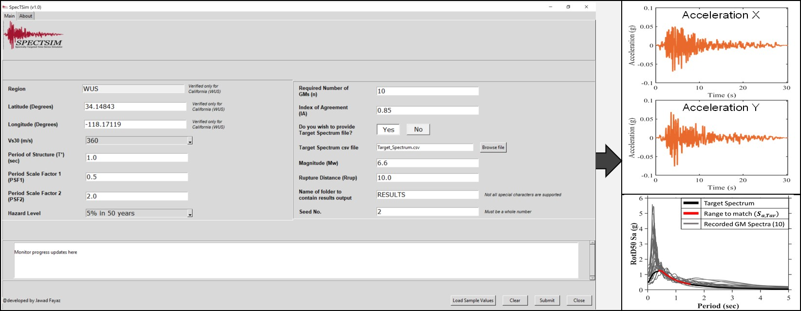
Opensees Finite-Element Seat-Type Bridge Models
Request Models
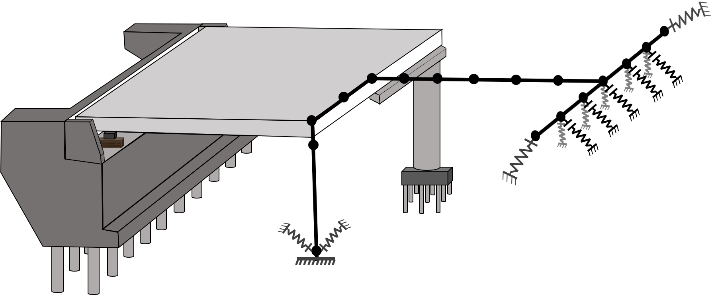
MATLAB script to compute Ground Motion RZZ Parameters
Github Link
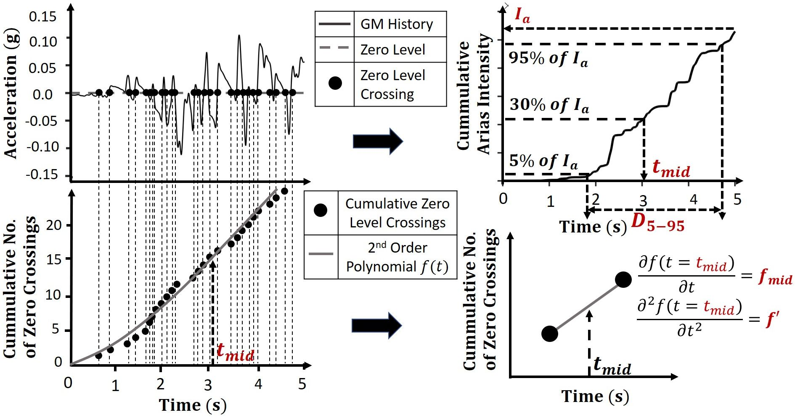
MATLAB script to select Ground Motions based on match with Target IMs using Weighted Multi-IM Objective Function
Github Link
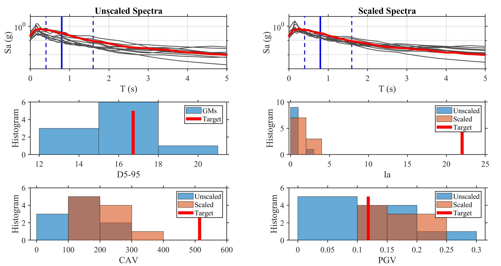
MATLAB script to find Ground Motions based on Spectral Match with a Target Spectrum
Github Link
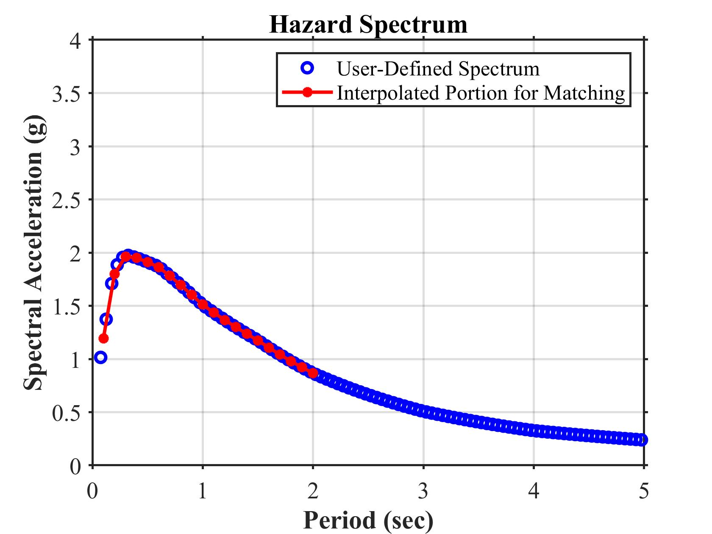
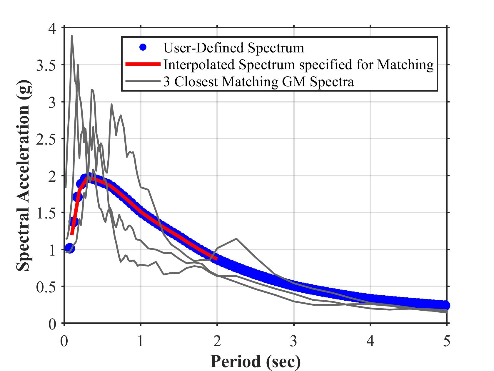
MATLAB and TCL Opensees script to generate Ground Motion RotD Spectra
Github Link
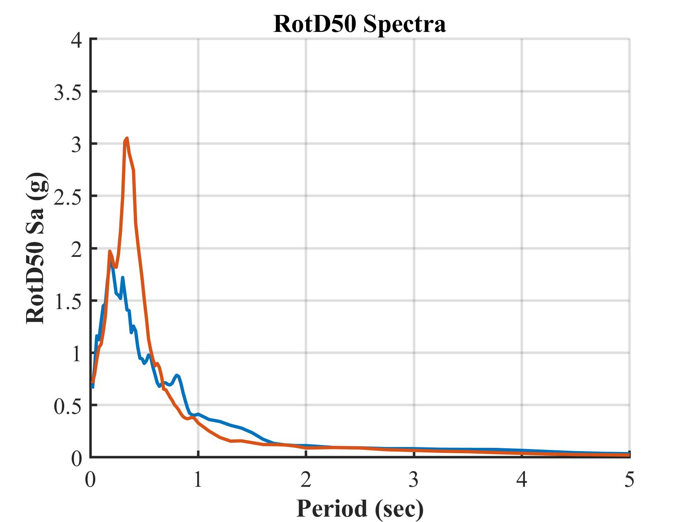
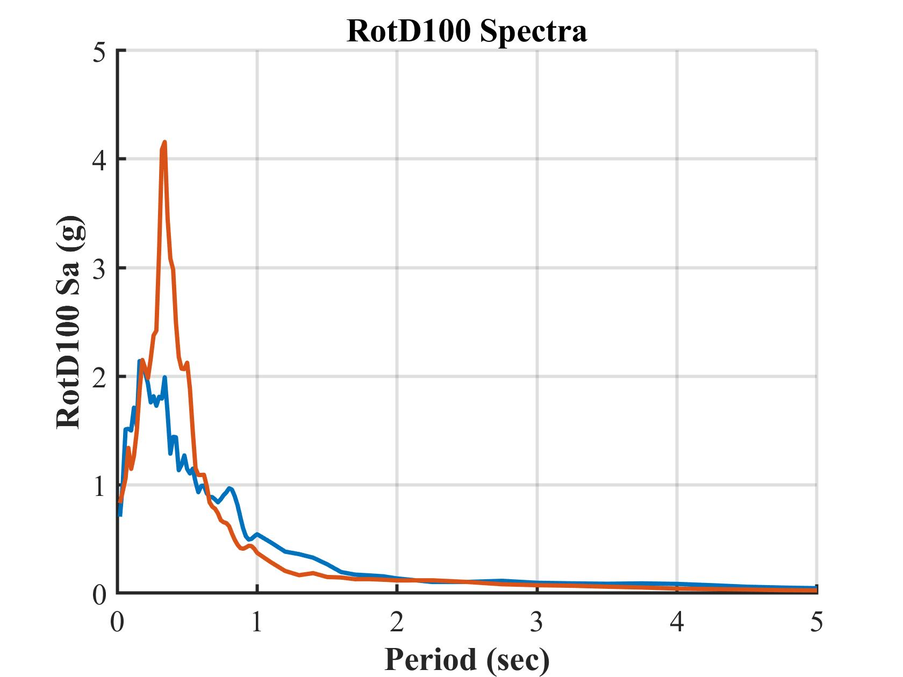
OpenseesPy script to generate Ground Motion RotD Spectra
Github Link
OpenSeesPy Link
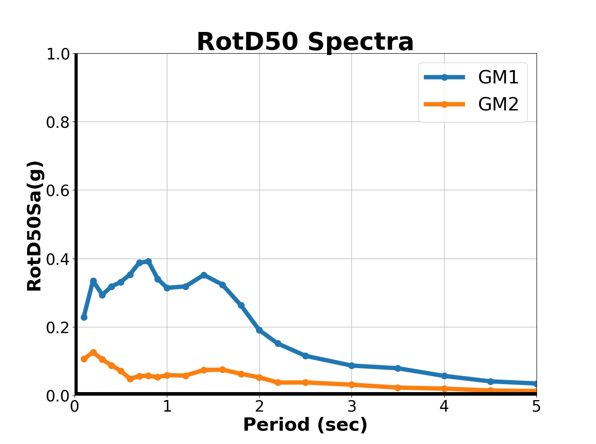
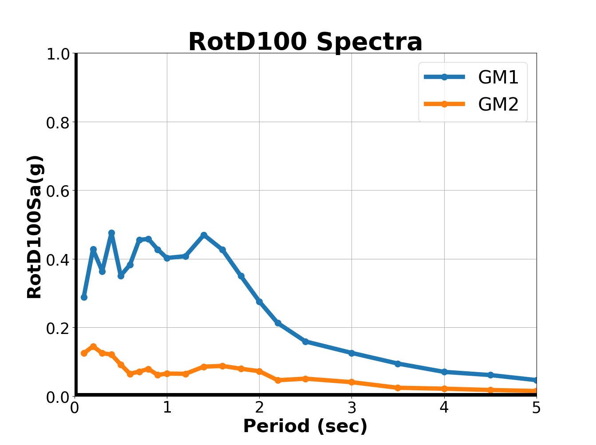
PYTHON script to Web-Scrape Hazard Curves and Deaggregation data from USGS Website
Github Link
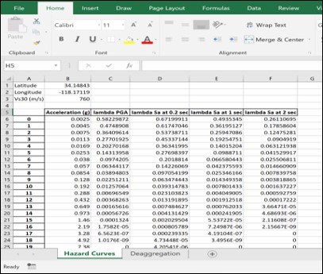
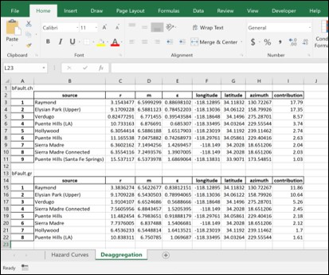
MATLAB script to conduct Support Vector Machines
Github Link
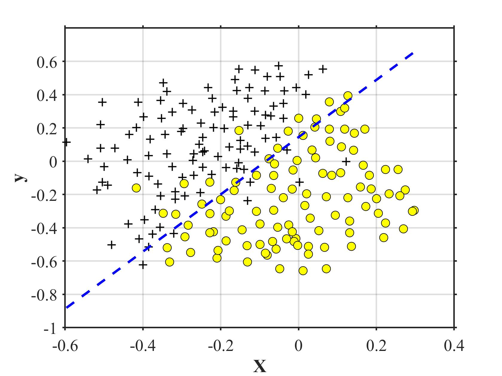
PYTHON script to conduct Nataf Transformation
Github Link
MATLAB script to parse NGAWEST2 GMs to .AT2 and Spectra to .txt
Github Link
PYTHON script to download attachments from your Email account
Github Link